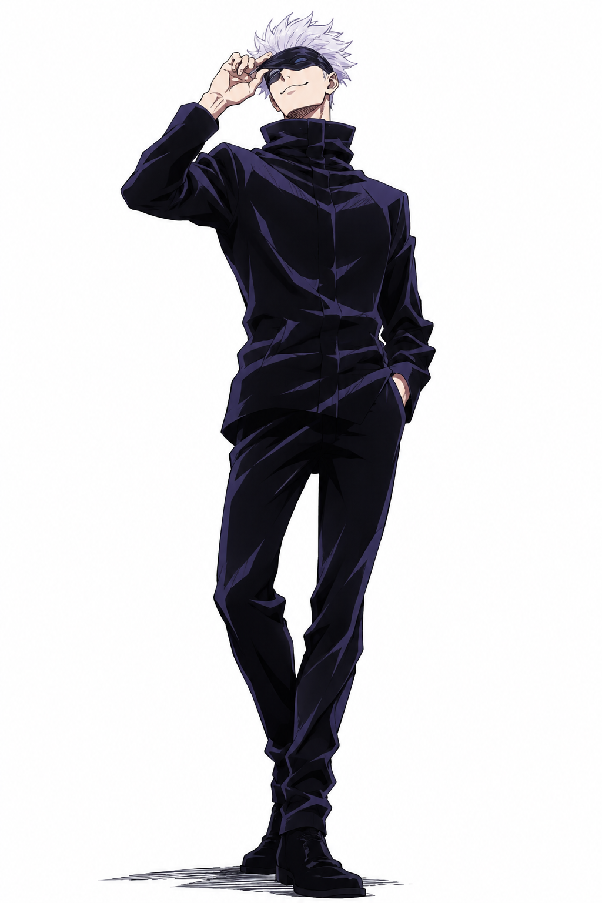

Satoru Gojo

Satoru Gojo es el hechicero de Grado Especial más poderoso de la era moderna en la serie Jujutsu Kaisen, conocido por el apodo de "El Chamán Más Fuerte" (o "El Honored One"). Como maestro en el Colegio Técnico de Magia Metropolitana de Tokio y cabeza del Clan Gojo, es el primer individuo en 400 años en poseer simultáneamente la Técnica de Maldición Ilimitada y los Seis Ojos.
En cuanto a su personalidad, Gojo es complejo: es juguetón, despreocupado y bromista con sus estudiantes y amigos, pero se muestra frío, arrogante y despectivo hacia la corrupción de los altos mandos de la hechicería y sus enemigos. A pesar de su actitud libertina y su exceso de confianza, posee una profunda lealtad y preocupación genuina por la seguridad y el futuro de sus alumnos.